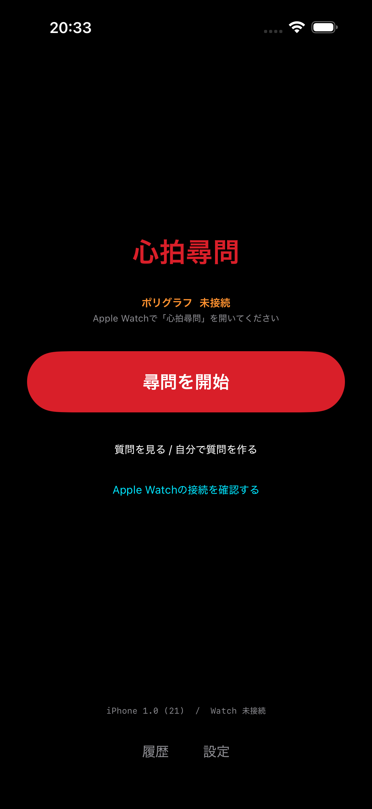
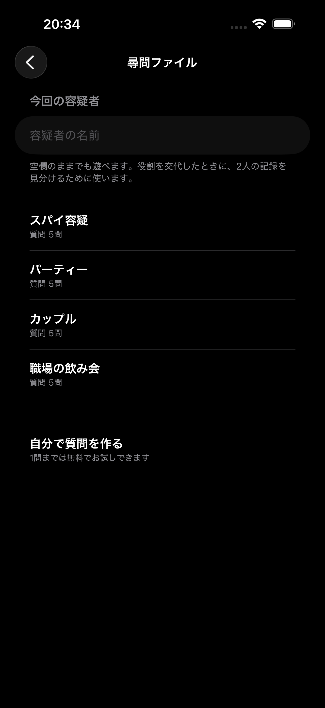
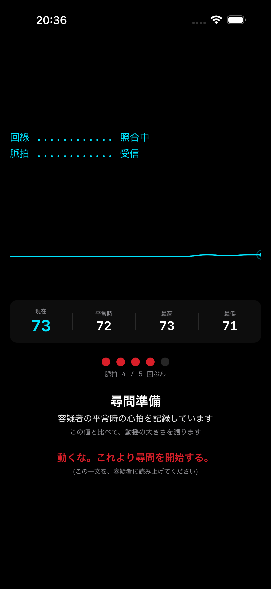
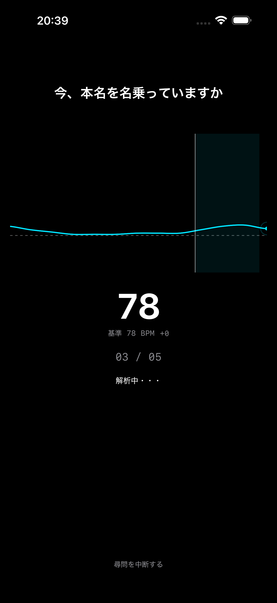
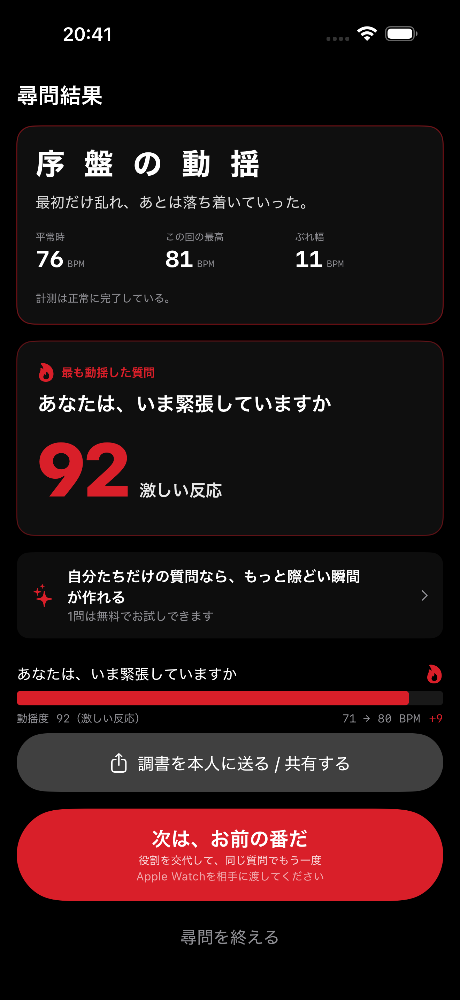
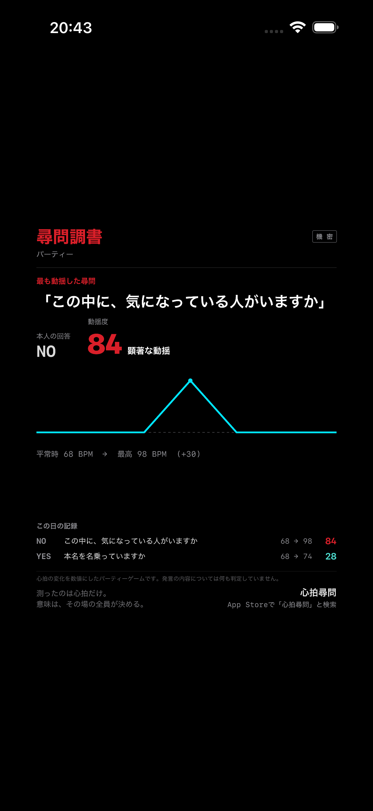

心拍尋問Shinpaku Jinmon / iPhone + Apple Watch 2人用パーティーゲーム
ひとことで
30字
手首の心拍を「動揺度」にする、2人用パーティーゲーム。
100字
iPhoneで質問を読み上げる「尋問官」と、Apple Watchを着けて答える「容疑者」。回答直後の心拍の跳ね方がリアルタイムでグラフになり、質問ごとの反応の強さが「動揺度」として点数化されます。質問セットはすべて無料です。
基本情報
| 名称 | 心拍尋問(しんぱくじんもん) |
|---|---|
| 公開予定日 | 2026年10月15日(木) |
| 対応機器 | iPhone + Apple Watch(Apple Watchが必要です) |
| ジャンル | ゲーム(2人用パーティーゲーム) |
| 価格 | 無料。アプリ内課金は「自分で質問を作る」の買い切りのみ(300円・サブスクなし) |
| 言語 | 日本語 |
| ダウンロード | App Store(公開後): https://apps.apple.com/app/id6806885141 |
| データの扱い | 心拍データは端末内で処理し、外部サーバーへは送信しません |
遊び方は3ステップ
- 容疑者役がApple Watchを着けて「覚悟はいいか」を押す。平常時の心拍を記録します
- 尋問官役がiPhoneに出た質問を読み上げる
- 容疑者役が声でYES/NOを答え、尋問官役がその答えをiPhoneに記録。回答直後の心拍の跳ね方がグラフとスコアになります
特徴
- Apple Watchの心拍センサーがゲームの中心。手首の反応を、その場で全員が見られます
- 「スパイ容疑」「パーティー」「カップル」「職場の飲み会」など、質問セットはすべて無料で使い放題
- 結果を画像にしてSNSでシェアする機能も無料
- 役割を交代して同じ質問でもう一度遊べます(2人の結果を比べられます)
- 心拍が取れなかった質問にはスコアを出しません。表示される数字はすべて手首で測った心拍から計算されたものです
スクリーンショット(クリックで原寸)
{kind=link}

ホーム{kind=link}

質問セット{kind=link}

平常時の計測{kind=link}

尋問中{kind=link}

結果画面{kind=link}

共有カードアプリアイコン: assets/app-icon.png(1024×1024)。すべて掲載・紹介の目的でご自由にお使いください。
{kind=link}
ご注意
本アプリは医療機器ではなく、心拍の変化を可視化するエンターテインメント目的のアプリです。医学的・科学的な診断や、発言の内容の判定を行うものではありません。
お問い合わせ・レビュー用の提供
個人開発チーム「ラボ310」
連絡先: slow.310.sss+beppan@gmail.com
レビュー用に、アプリ内課金(自分で質問を作る)のオファーコードをお渡しできます。